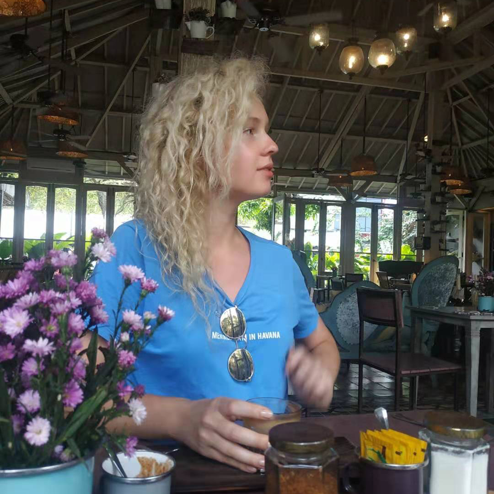

January. The very begining
This picture is one of the first pictures I've made in China. There was a strange mix of feelings. Everything was so new and unknown, all my friends were celebrating me with holidays but I didn't have festive mood. Nevertheless, my inner state was serene and exciting. That moment I was waiting for my new friend when I found this quote. And I really liked it. It was a great day.
Conghua
Night streets and night life in China have special attractiveness. Especially for those who see this for the first time.
First delightful shock
I just stood there with my mouth open. It was the first time when I saw the city center of Guanzhou. I was overcome with emotion. That moment I was consumed with rapture, admiration and awareness of magnificence of human mind. The feeling of pure joy and faith in myself as everything is possible. Thanks to my friend for sharing this experience. It was a great day.
February
Getting deeper into Chinese culture and their customs. I saw ritualistic ceremonies, numerous fireworks which were very close to people's houses, had a traditional dinner within the Chinese family, beat the Chinese drum. Me and my friends were exploring the city as well and finally we climbed the Baiyun Mountain! What a great time.
February. Exploring the city
Getting deeper into Chinese culture and their customs. I saw ritualistic ceremonies, numerous fireworks which were very close to people's houses, had a traditional dinner within the Chinese family, beat the Chinese drum. Me and my friends were exploring the city as well and finally we climbed the Baiyun Mountain! What a great time.
In March I visited Lotus Mountain. The Ancient Quarry of Lotus mountain was quite a beautiful place to explore. The place was quite large and the pagodas, flowers, garden were really lovely. The gold statue of the Goddess of Longevity was super beautiful as well.
I also got dipper into Chinese culture as it amazingly combined modern things with ancient traditions. Chinese language, all kind of arts, cuisine, philosophy, religion, politics, and history have global influence, while its traditions and festivals unchanged over millennia.
In April I visited Hong Kong for the first time. I was in Hong Kong several times later, but that trip had pretty warm memories and emotions with mostly my personal experience as the other times I wasn't there alone. I can already say that Hong Kong is my favourite megacity so far; a city full of skyscrapers surrounded by tall mountains and water in perfect harmony with the surrounding nature, what’s not to love? One of the best things about Hong Kong was the view of the mega city from Victoria Peak. The night views of the harbor and the city are really inspiring.
Probably my favorite part of Hong Kong is the mix of old and new it has going. While it has some of the nicest sky scrapers and modern buildings you’ll see anywhere, it’s managed to keep the older buildings and narrow alleys from its past. There’s that beautiful Hong Kong skyline up high, but down on the ground you can find areas that take you back in time with old, Chinese neon signs, markets, dirty alleys and plenty of character. Another interesting thing about Hong Kong is exploring the different worlds hidden within the narrow alleys. While being in such a developed international city, it immediately takes you back in time to a feeling of the Hong Kong of old.
In May me and my Chinese friend went to Xi'an to see The Terracotta Army and visit Mount Hua. Xi'an is one of the oldest cities in China and there are a lot of historical places to visit, but we had only 3 days and couldn't devote time to all of them. The most unforgettable experience was our hiking up Mount Hua and meeting the sunrise at the top of its East Peak. The views at the top were breathtaking and the peaks piercing through the clouds... What a view!
We really enjoyed our staying in Xi'an. This city is perfect for walking and having a trip into the mists and lores of Chinese history. There are some beautiful parks from the ancient times with excellent examples of old architecture to feel the atmosphere of the past. Beautiful, enchanting, relaxing and like no other. That's my impression on our small trip into a cradle of this ancient civilization.

In June I spend a lot of time exploring Guanzhou and walking around its downtown. Modern buildings, including Guanzhou's Second Children's Palace, Guanzhou Opera House, TV Tower, Library and Guangdong Museum, with beautiful flowers and trees and always accompanied by the Pearl River. The park in the central square looks amazing. That's a great place just to pause and take a moment of peace. It is beautiful at all times of the day and throughout the whole year. The night views are amazingly beautiful. At night the ground is lit up and the surrounding buildings are all lit up with a colorful moving pictures.
In July was my third visit to Hong Kong. The weather was perfect and my companion was great. So, we had a super nice time there. As usual there was Victoria Peak (The Peak) on my do list. We got a taxi to the top. There was an interesting mall with various attractions, but that wasn't the real top of the peak. We left the crowd behind and did a small hiking for heigher and quiter place. There was a solitary spot a bit further up the road. I found it during my first staying in HK and which I humbly named after myself as Kristina's Peak. We also visited Disneyland. It was amazing, we had so much fun. That was my favourite trip to Hong Kong.
In August I visited Shenzhen. Can you imagine that 40 years ago it was a small border city of some 30,000 inhabitants. But nowadays it's the fastest growing city in history. Shenzhen is amazing, prosperous and well planned metropolis of 20 million people. I tried some new food, we rided a VR roller coaster and visited a park with miniature-scale famous landmarks of the world. That was fantastic!

In September me and my mom visited Indonesia. We met a sunrise in Borobudur,a 9th-century Mahayana Buddhist temple, went to Bromo volcano with a local taxi driver, who had never been there before, we spend 6 hours in a train learning about locals more and more, we're by the fire under the night sky waiting for a sunrise, we had a great dinner by the seaside, watched a lot of gorgeous sunsets in Bali and even spent one night in a bungalow. We met a lot of friendly, good-natured and sincere people. Indonesia, someday I will come back.
There were holidays during the first week of October in China and I decided to spend it in Vietnam. I had never been to Vietnam before and there was a friend of my friend there, so I packed my belongins and went to the airport. And I didn't regret of that, as I had the perfect stay. Lying on the beach, swimming in warm and clear water, enjoying beautiful sceneries with nice people - the best antidote for trouble.
Enjoying the great sweet November weather with friends - that's my describtion of the month. Delisious food, good people, art therapy and wearing shorts were on my bucket list. Furthermore, my chinese friends were stunned because I knew the city better then they did.